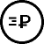

Оплата
и доставка
Если Вы не нашли ответ на интересующий вопрос, напишите нам по адресу:
[email protected] или позвоните по телефону:
8(800)550-79-24. Звонок бесплатный.
Способ оплаты
• Наличными или картой курьеру при получении
• Наличными или картой при получении в ПВЗ / Постамате
• Наличными при самовывозе со склада

Стоимость доставки
• Курьером от 1 рабочего дня от 230 руб.
• Курьером за МКАД от 1 рабочего дня от 269 руб.
• Экспресс-доставка "день в день" от 310 руб.
• В пункт выдачи от 1 рабочего дня от 100 руб.
• В Постамат от 1 рабочего дня от 125 руб.
• Самовывоз со склада от 1 рабочего дня 80 руб.
• В отделениях Почты РФ от 1 рабочего дня от 198 руб.
Способы доставки
• Курьерская доставка
• ПВЗ
• Постамат
• Почта России
• Самовывоз
Область доставки
Доставка по всей России
После оформления заказа
Оповещения о статусах заказа будут приходить на e-mail.
Также вы получите номер трекера.
Предварительно с вами свяжется по телефону наш сотрудник, чтобы подтвердить заказ и уточнить удобное для
вас время доставки.
Непосредственно в процессе доставки вам позвонит курьер.
Упаковка
В целях заботы об экологии, мы не вкладываем наклеек или дополнительных украшений, которые создают лишний мусор.
Что делать с пустыми банками
Мы рекомендуем сдавать упаковку в ближайшие пункты переработки, которые можно найти на интерактивной карте http://recyclemap.ru/ , составленной организацией Гринпис. в ближайшее время, мы будем рады предложить скидки за сданные нам пустые баночки при повторном заказе